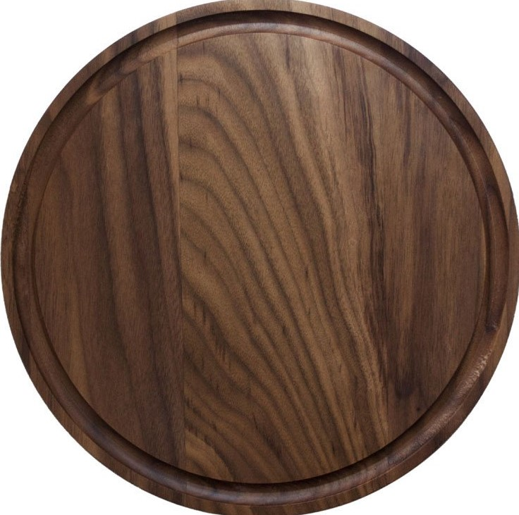

Cheese Dating



Quinoa with Halloumi
Ingredients
- 100g (3½oz) quinoa, rinsed
- 1 small red onion, sliced
- 1 tsp cumin seeds
- 2 tbsp olive oil
- 8 baby plum tomatoes, halved
- 125g (4oz) halloumi cheese
- 1 tbsp red wine vinegar
- Salt and freshly ground black pepper
- A good handful of mint leaves
- Pitta breads and yogurt, to serve
Method
- Put the quinoa in a pan with 300ml (½ pint) cold water. Bring to the boil, then reduce the heat and simmer for 20 mins until the water is absorbed.
- Meanwhile, heat the grill and put the onion slices on a baking sheet. Sprinkle with the cumin seeds and 1 tbsp oil. Grill for 5 mins, stir, then add the tomatoes and cook until they are just softened.
- Cut the cheese into 6 thin slices. Cook them on a hot griddle pan, or under the grill, for about a minute on each side.
- Drain the quinoa, stir in the grilled tomatoes and onions and all the cooking juices on the baking sheet, along with another tbsp of oil, the vinegar and seasoning. Spoon into a bowl. Shred the mint leaves into the salad and stir in carefully. Arrange the cheese on top. Serve with pitta breads and yogurt.
Gorgonzola Recipe
Swiss Cheese Recipe
Baked Camembert
Ingredients
- 1 whole camembert
- 1 garlic clove, sliced
- 3-4 sprigs fresh thyme
- 1 tsp olive oil
Method
- Preheat the oven to 200C/400F/Gas 6
- Pierce the top of the cheese in several places with a sharp knife and insert pieces of garlic and sprigs of thyme into the slits
- Drizzle the cheese with olive oil and place on a baking sheet, leaving the cheese in its box. Bake in the oven for ten minutes, or until the centre of the cheese is melted
Red Leicester Recipe
Cottage Cheese Recipe
How close am I to dinner?